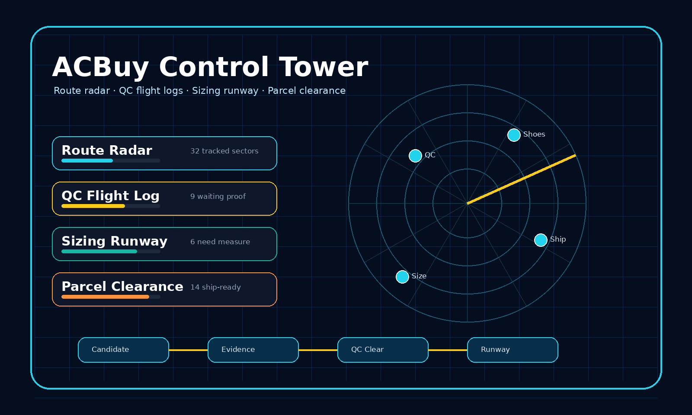

ACBuy Spreadsheet works like a buyer control tower: route radar, QC flight logs, sizing runways, and parcel lanes help you organize decisions before shipping.

Each category is a radar sector with buyer signals to confirm before takeoff.
footwear sectors for sneakers, runners, boots, slides, and fit-sensitive picks.
Radar: insole lengthfleece, knits, embroidered pulls, oversized layers, and shoulder-drop checks.
Radar: chest widthgraphic tees, blanks, collar checks, print position, and wash-risk basics.
Radar: print placementouterwear sectors where lining, zipper detail, sleeve length, and volume matter.
Radar: zipper closeupsdenim, cargos, track pants, shorts, waist checks, and fabric drape.
Radar: waist measurecaps, beanies, bucket hats, crown shape, embroidery, and closure hardware.
Radar: crown shapematching outfits, tracksuits, color consistency, and paired sizing decisions.
Radar: top/bottom matchbasics, socks, pack counts, comfort fabric, and light parcel fillers.
Radar: pack countkits, retro shirts, namesets, patches, sponsor prints, and badge alignment.
Radar: badge alignmentbags, belts, wallets, sunglasses, jewelry, and hardware-focused add-ons.
Radar: hardware finishseasonal extras, lifestyle pieces, desk finds, and unusual radar picks.
Radar: seller photosCompare candidates by category.
Attach sizing and seller evidence.
Approve only after photos prove details.
Ship by parcel weight and volume.
Use runway checks to decide whether a candidate belongs in the current parcel.
Tees, socks, caps, and accessories that balance unused parcel space.
Footwear and fragile items where packaging changes cost and risk.
Jackets and heavy hoodies that can force a different line.
Review every item before international shipping.
A control-tower workflow for routing product candidates before submission.
Score each ACBuy candidate using photos, sizing, seller signals, and parcel risk.
A warehouse-photo guide for approving, measuring, exchanging, or returning.
Sizing checks for shoes, clothing, jerseys, accessories, and sets.
Plan parcels by weight, volume, box removal, and line choice.
A practical review of ACBuy from the buyer workflow perspective.
Open current finds, scan the radar, then approve only after the QC log is clear.
Open Full Finds Directory →